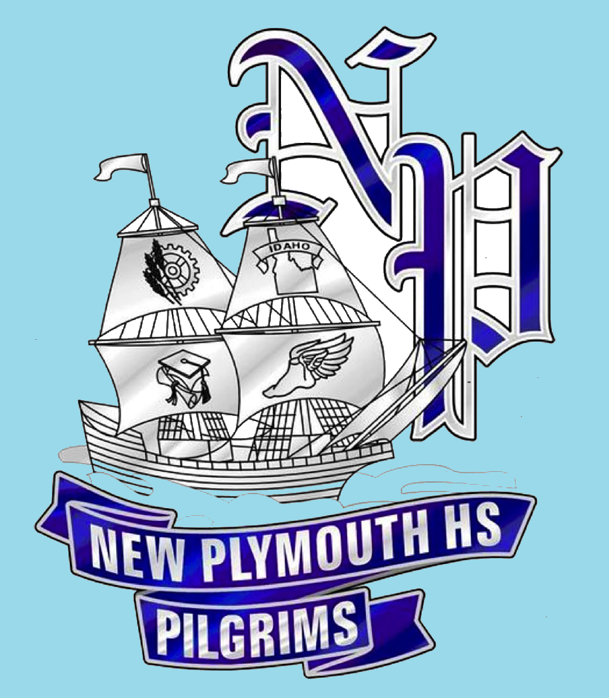
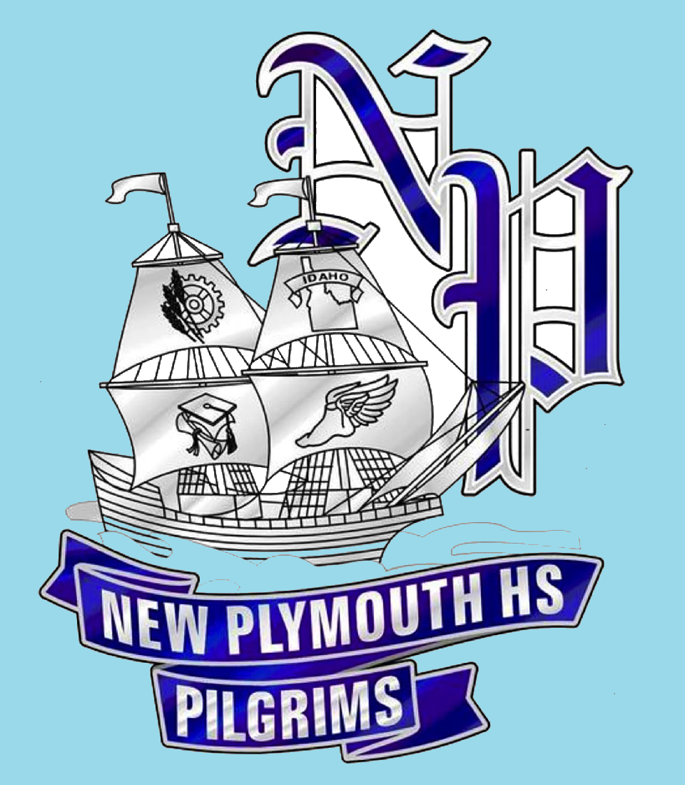

Education
Schools
IDYCA
The Idaho Youth Challenge accademy was the schoo I graduated from with my diploma.I recieved multiple certfications while at IDYCA including FEMA courses ICS 0100,0200,0700 and wild land first aid, flaggers license, search and rescue hours, Pre CNA, Boating license, CBURN classes for bio warfare, and I recieved the rank of Staff Sergeant and recieved multiple multiple awards. Some of these awards include the Lamp of knowledge, and ribbons for accomplishments through out the school. I was also put in the Honor gaurd team where we had to write an essay to be picked out of 500 other students, the Honor gaurd would go to ceremonies, games, memorial services, parades and even funerals for the fallen. We would then carry the united states flag, POW flag, State flag, and occassionally we would carry our school flags well. We did not have sports in this school however we were tested on our physical endurance three times throughout the school year which if we did not pass, we could be sent home.
Pilgrims
I attended this school only until the tenth grade where I left to attend IDYCA. I did however recieve atleast a reward from my math class and this is where my education in highschool started. I also took track, wrestling, and crosscountry as a sport in this school.
 

CWI
I attended Job Core which is working with CWI to help students graduate. I recieved my GED from here which with my highschool diploma from IDYCA has given me a highschool equivilancy certificate, which allowed me to join the Marine Corps.